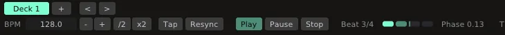
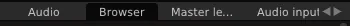

Contents
Getting started
- Welcome to NyrexVJ
- Installing and first start
- The window at a glance
- Your first show in five minutes
Playing visuals
- The clip grid
- Decks and transitions
- Layers and blending
- The Clip window
- Effects
- The Library
- Presets and sessions
- The Master window
Music and motion
Your own content
- Video and image clips
- Your own shaders
- 3D models
- The Clip Creator
- Text, particles and effect chains
- The node effect editor
- Live sources: Spout, NDI and cameras
Output and recording
Live control and shows
- Control: MIDI, OSC and the web page
- Show sync and timecode
- The show timeline
- Stage: DMX, VRSL and VRChat
- Plugins
Reference and help
Manual / Getting started
The window at a glance
#The menu bar
This chapter names every part of the main window, so the rest of the manual can refer to them. The menu bar at the top has these menus:
| Menu | What it holds |
|---|---|
| File | New empty composition, Save as preset, Import Resolume composition (ResoPort)..., Open data folder, Quit |
| Edit | Undo and Redo |
| View | Workspaces, Reset window layout, interface size, High contrast, Keyboard navigation, Show status bar |
| Output | Open or close the output windows, Fullscreen, Outputs and mapping, Start or stop recording, Recording settings, Send to OBS via Spout, Send via NDI, Video routing |
| Audio | Choose the audio source: Off, Demo signal, System audio, Input, and Refresh devices |
| Timeline | Run the timeline, Show the timeline window, Place the timeline (dock at the bottom, dock on the right, float as a window), Play, Pause, Stop, Release hand moves |
| Settings | Opens the Settings window |
| Creator | Open the Clip Creator, New 3D scene, templates, the node effect editor, Text and particles, Effect chains, Shader editor |
| Help | User manual, What's new, links, Language, Check for updates |

#The transport bar
The two rows right under the clip grid hold what you need at every moment. The first row has the 16 deck buttons with Previous and Next. The second row has the BPM field with minus, plus, /2 and x2, Tap and Resync, then Play, Pause and Stop, and the beat display. Play lets the tempo clock and all clip motion run, Pause freezes them, and Stop pauses and restarts the beat count at 1. The beat display shows the beat in the bar, one tick for every beat of the bar and the position inside the beat as Phase. A thin line along the lower edge of the deck window shows how far a deck transition has come. In a window narrower than about 1500 pixels (at an interface size of 100 percent) the 16 deck buttons shrink to one button that shows the active deck and opens the list of decks, and in a very narrow window the buttons /2 and x2, Resync and the beat display make room for Play, Pause and Stop.


#The deck window
The big window across the top is the deck window. It holds the clip grid with 8 columns and 4 layers and, right below the grid, the deck buttons and the transport bar. In front of each layer row are the buttons X (clears the layer), B (bypass) and S (solo), the blend mode, the opacity and the layer name, which turns mint when the layer is selected. Everything you play live starts here. See The clip grid and Decks and transitions.
#Preview and output
In the row below the grid, on the left, you find two windows with a picture, Output above and Preview below. The Output window shows the final picture exactly as it leaves NyrexVJ, with its size, the frame rate and the tempo. The Preview window shows a cell that you only looked at: Ctrl+click on a cell shows it there without playing it, and Play now plays it. That way you can prepare the next clip while the audience sees something else.
#Layer, Clip and Master
Next to the two pictures are the panels that belong together. Master and Layer share one tab bar, and Clip and Trigger share the next one. The Layer window holds opacity, blend mode, the audio reactions and the four effect slots of the selected layer. The Clip window shows the clip of the selected cell and its controls. The Master window works on the final picture: level, blackout, resolution, colour grade, macros, LFOs and four master effects. They are described in Layers and blending, The Clip window and The Master window.
#The Trigger window
The Trigger window is the second tab next to Clip. Clip start holds Quantize, which decides when a launch happens. Transition holds the type, Beat sync, the length and Auto cycle. Beat grid holds Beats per bar, Nudge, Snap to beat and Bar start here. When an audio source is running, it also holds Sync BPM to audio. See Starting on the beat, Transitions and The beat grid.
#The Audio window
The Audio window is a tab in the tab bar of the Browser. It shows the live spectrum, the meters for Bass, Mid, High and Level, the beat detection and the analysis settings. See Audio and music.
#The Browser
The Browser at the bottom right has two tabs of its own. Presets holds the factory looks and your own looks, and Library holds all clips, effects and files you can use. See Presets and sessions and The Library.
#The tabs next to the Browser
The tab bar of the right column holds, besides the Browser and the Audio window, five small windows that show the state at a glance. Master level has the level slider, the level in dB and Blackout. Audio input has the source, Refresh devices and a level meter. Network has the switches for NDI and Spout and the state of the network sync, with a button to its settings; MIDI shows the device, its state and the last message; OSC has the switch for receiving and shows its state and the last message. They are windows like all others, so you can drag a tab out and place it where you want it, for example below the pictures. All options are still in Settings.


#The status bar
The bar at the bottom shows the frame rate, the processor and graphics time, the output size, the tempo, the current deck and the state of the audio. During a recording it also shows REC with the time and the dropped frames. You can hide it in Settings, Appearance.
#Moving windows around
All windows can be dragged by their title, docked next to each other, stacked as tabs or pulled out to float. NyrexVJ remembers the layout. You can keep named layouts as workspaces and switch between them from the View menu. If you lose a window or the layout got messy, use View, Reset window layout. The timeline opens from Timeline, Show timeline window, as a window that floats above the rest. Timeline, Place the timeline docks it at the bottom or on the right of the main window, or lets it float again. You can also drag it by its title into any dock like every other window. The size of the whole interface, its contrast and its colours are in Settings, Appearance; all of it is explained in Interface, workspaces and accessibility.
Found a mistake or something missing? Tell us on GitHub. The same manual is built into the program, so you have it without internet. Open it with F1 or from the Help menu, then User manual.